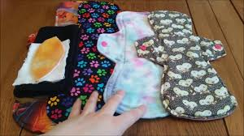
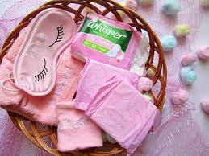

Hello! from sowcoders
First, reusable sanitary pads is aproduct that is made majorly for women and girls in the society.
For about 80% women and girls in our society are unable to buy disposable pads because of poverty and hence are expensive.

EFFECTS OF DISPOSABLE PADS
Disposal pads cause irritation and infection on ones body because they are made of plastic.
Another effect of disposal pads they cause cancer, yes because one is using them every month and yet are made of plastics
They also contain pesticides and herbicides. We all knoe that pads are made of cotton crops being sprayed with pesticidesand herbicides
They can also definitely cause harm when they reach blood strea. They contain dioxin, an environmental pollutant which is not natural
EXAMPLE OF DISPOSABLE PAD

REASONS FOR COMMING UP WITH THIS IDEA
Ihave come up with this idea so that women and girls in my community can enjoy life when they are in aheavy period.
So instead of people disposing their second hand clothes, i collect and make this pads from them and bamboo fibres.
HOW REUSABLE SANITARY PADS ARE OF IMPORTANCE
The most important benefit of reusale sanitary pads is that they are reusable
They are made of biodegradable and environmental-friently materials. This creates considerably less overall waste compared to disposable products.
They can last for several years and are thus pocket-friendly
MATERIALS FOR MAKING REUSABLE PADS
1.Second-hand clothes
2.bamboo fibres
3.Cotton
4.Fine velvet
5.Old towel
MISSION
My mission is to make sure tha women and girls in the society benefits from them
To support Africa's most vulnerable girls and young women by providing reusable menstrual pads in conjunction with sexual and productive heaelth education and lifeskills workshop
To empower women and girls through provision of locally produced reusable pads
To improve access to period products for women around the world either by training them to make their own pads or by facilitating access to pads